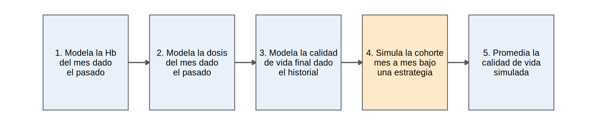
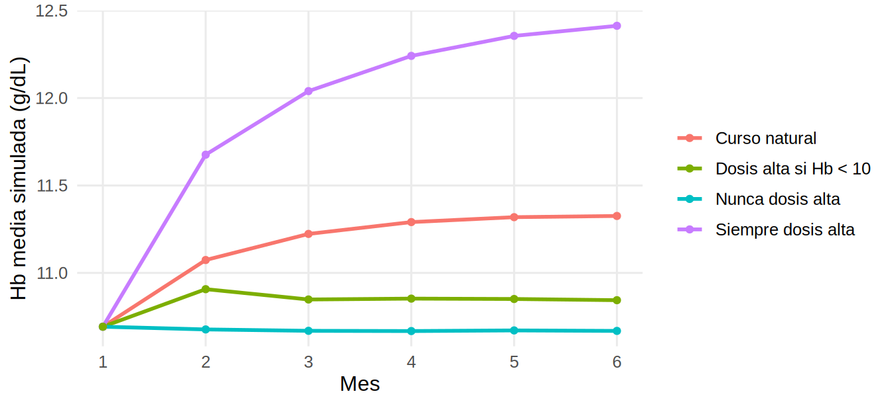
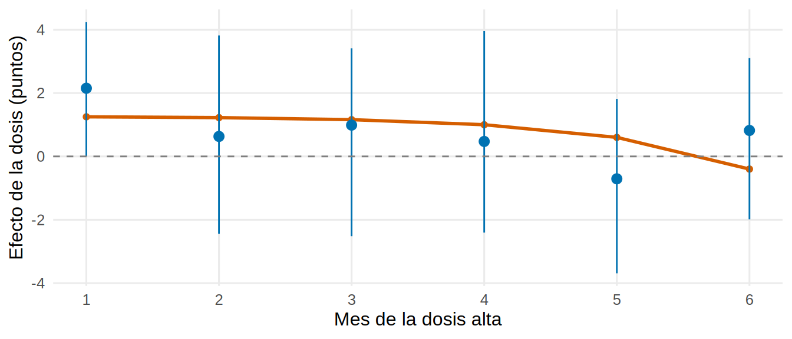
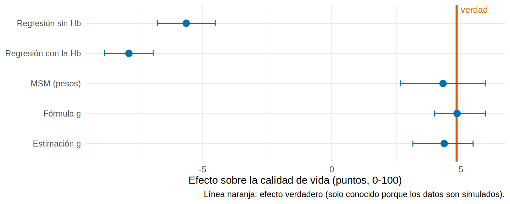

library(tidyverse)
library(sandwich)
library(lmtest)
source("R/funciones_epi.R")
source("R/funciones_extra_a.R") # num(), pct()
source("R/funciones_extra_cap1213.R") # diagrama_flujo(), grafico_estimaciones()
source("R/simular_cap19_epo.R")
source("R/funciones_cap19.R")
theme_set(theme_minimal(base_size = 12) + theme(panel.grid.minor = element_blank()))
hd <- simular_hd_epo(n = 5000, K = 6, semilla = 2024) # la misma cohorte SIMULADA de 19.1 y 19.2
hd_l <- agregar_rezagos(hd)
ancho <- a_ancho_hd(hd)
verdad <- verdad_hd_epo(n_mc = 200000) # verdad por simulación (19.1)
efecto_verdad <- verdad$efecto_vs_nunca[verdad$estrategia == "siempre"]
efecto_dinamica <- verdad$efecto_vs_nunca[verdad$estrategia == "dinamica"]Fórmula g paramétrica y estimación g: simular el mundo bajo cada estrategia
Nota🩺 Escenario
El jefe de servicio te pregunta algo más fino que “dosis alta frente a dosis estándar”: ¿qué pasaría si, en toda la unidad, solo subiéramos la dosis cuando la Hb cae por debajo de 10 g/dL? Esa es una regla, no un tratamiento fijo, y el MSM de 19.2 (que resume el tratamiento como “meses de dosis alta”) no la responde directamente. Para eso sirve la fórmula g: aprendes cómo se comporta el mundo (cómo cambia la Hb con la dosis, cómo influye todo en la calidad de vida) y luego lo simulas bajo la regla que quieras.
Lo que vamos a hacer
- Ajustar los modelos de la fórmula g paramétrica y simular (Monte Carlo) la cohorte bajo cada estrategia.
- Compararla con el MSM de 19.2 y con la verdad, incluida una estrategia dinámica.
- Entender la estimación g de modelos estructurales anidados, con un ejemplo mínimo que sí se ejecuta.
- Resumir en una tabla cuándo usar cada método, y ver cómo se escribe en los paquetes.
Paso 1. La idea: aprender el mundo y simularlo
La fórmula g tiene cinco pasos. Los tres primeros son tres modelos, uno por cada pieza del mundo que se repite cada mes; los dos últimos son pura simulación:

La clave del paso 4: en la simulación, la dosis la fija la estrategia (por ejemplo, “dosis alta solo si Hb < 10”), no el modelo de la dosis. Pero la Hb sí se simula con su modelo, porque la dosis la cambia. Así se respeta el bucle dosis-Hb sin condicionar nada: cada paciente simulado “vive” los seis meses bajo la regla.
Paso 2. Ajustar los modelos
ajustar_modelos_g() (en R/funciones_cap19.R) ajusta, con el formato largo y el pasado de cada paciente:
- la Hb del mes (\(t \ge 2\)) según la Hb y las dosis de los meses anteriores y las covariables basales;
- la dosis del mes según su pasado y la Hb actual (solo se usa para reproducir el curso natural);
- la calidad de vida final según todo el historial (Hb y dosis de los 6 meses) y las covariables basales.
mod <- ajustar_modelos_g(hd_l) # lista con los tres modelos y la cohorte basal
round(coef(summary(mod$hb))[, c("Estimate", "Std. Error")], 3) # modelo de la Hb del mes Estimate Std. Error
(Intercept) 4.376 0.061
hb_previa 0.546 0.005
hb_basal 0.078 0.005
dosis_previa 0.999 0.007
dosis_previa2 -0.174 0.009
edad -0.004 0.000
dm -0.115 0.007
tiempo_hd -0.017 0.001c(sd_residual_hb = mod$sd_hb)sd_residual_hb
0.5442553 Qué vemos: cada mes de dosis alta suma 1.00 g/dL a la Hb del mes siguiente (el valor de la simulación), y esa subida decae con el tiempo: la dosis de hace dos meses aporta un coeficiente de -0.17. La desviación residual (0.54 g/dL) importa: en la simulación añadimos ruido de ese tamaño para que los pacientes simulados varíen como los reales.
Paso 3. ¿El mundo simulado se parece al observado?
Antes de usar los modelos para imaginar estrategias, comprobamos que reproducen lo que ocurrió. Simulamos el curso natural (la dosis se simula con su propio modelo) y lo comparamos con los datos observados:
natural <- simular_formula_g(mod, "natural")
chequeo <- tibble(mes = 1:6,
hb_observada = tapply(hd$hb, hd$mes, mean), hb_simulada = natural$hb_medias,
dosis_observada = tapply(hd$dosis_alta, hd$mes, mean), dosis_simulada = natural$dosis_medias)
chequeo |> mutate(across(-mes, \(x) round(x, 2)))# A tibble: 6 × 5
mes hb_observada hb_simulada dosis_observada dosis_simulada
<int> <dbl[1d]> <dbl> <dbl[1d]> <dbl>
1 1 10.7 10.7 0.4 0.4
2 2 11.1 11.1 0.41 0.41
3 3 11.3 11.2 0.39 0.39
4 4 11.3 11.3 0.37 0.38
5 5 11.3 11.3 0.37 0.37
6 6 11.3 11.3 0.38 0.37c(observada = mean(ancho$calidad_vida), simulada = natural$y) |> round(2) # calidad de vida mediaobservada simulada
57.12 57.08 Qué vemos: las medias simuladas de Hb y de dosis siguen a las observadas mes a mes, y la calidad de vida media simulada (57.08) casi coincide con la observada (57.12). No prueba que los modelos sean correctos, pero un desajuste grande sí probaría que no lo son.
Ahora simulamos las tres estrategias y miramos cómo se mueve la Hb media:
estrategias <- c(`Curso natural` = "natural", `Nunca dosis alta` = "nunca", `Siempre dosis alta` = "siempre", `Dosis alta si Hb < 10` = "dinamica")
trayectorias <- imap_dfr(estrategias, \(e, nombre) tibble(estrategia = nombre, mes = 1:6, hb = simular_formula_g(mod, e)$hb_medias))
ggplot(trayectorias, aes(mes, hb, color = estrategia)) + geom_line(linewidth = 1) + geom_point() +
scale_x_continuous(breaks = 1:6) +
labs(x = "Mes", y = "Hb media simulada (g/dL)", color = NULL)
Paso 4. Los efectos de cada estrategia, con bootstrap
El efecto de una estrategia es la calidad de vida media simulada bajo ella, menos la de “nunca”. efectos_formula_g() hace los pasos 2 a 5 (con 5 copias de cada paciente para suavizar el azar de la simulación). Para el intervalo repetimos todo (los tres modelos y la simulación) en 100 remuestras de pacientes:
est_g <- efectos_formula_g(hd, c("siempre", "dinamica"), copias = 5)
ic_g <- bootstrap_pacientes(hd, \(x) efectos_formula_g(x, c("siempre", "dinamica"), copias = 5), B = 100, semilla = 193)
rbind(estimado = est_g, ic_g) |> round(2) siempre dinamica
estimado 4.85 0.65
ee 0.53 0.07
inf 3.97 0.54
sup 5.95 0.81# MSM de 19.2 (pesos estabilizados), con IC robusto, para comparar
f_num <- dosis_alta ~ dosis_previa + edad + dm + tiempo_hd + mes
f_den <- dosis_alta ~ dosis_previa + hb + edad + dm + tiempo_hd + mes
msm <- ajustar_msm(pesos_finales(pesos_msm(hd_l, f_num, f_den)), "sw")
rb <- coeftest(msm, vcov = vcovHC(msm, type = "HC1"))["dosis_acum", ]
est_msm <- 6 * unname(rb["Estimate"]); ee_msm <- 6 * unname(rb["Std. Error"])meses_dinamica <- sum(simular_formula_g(mod, "dinamica")$dosis_medias) # meses de dosis alta por paciente bajo la reglaQué vemos: para “siempre frente a nunca”, la fórmula g da 4.85 (IC 95 %: 3.97 a 5.95); el MSM de 19.2, 4.31; la verdad, 4.83. Para la regla dinámica, la fórmula g da 0.65 (IC 0.54 a 0.81) frente a la verdad de 0.63: una pregunta que el MSM de dosis acumulada no responde. El efecto de la regla es pequeño porque, bajo ella, un paciente recibe en promedio solo 0.7 de los 6 meses con dosis alta (frente a 6 con “siempre”).
Paso 5. Estimación g de modelos estructurales anidados
La estimación g (g-estimation) parte de otra idea. En lugar de modelar la Hb y el desenlace, modela el efecto de la dosis de cada mes y busca el valor que “deshace” la confusión. Es el método más antiguo de la familia y el menos usado, pero es corto de implementar y muy ilustrativo.
La intuición. Quita mentalmente la dosis alta de un mes a todos los pacientes que la recibieron, restándoles lo que esa dosis les aportó a la calidad de vida (un número \(\psi_t\)). Lo que queda es la calidad de vida que habrían tenido sin esa dosis. Si \(\psi_t\) es el correcto, ese “resto” ya no puede depender de si el nefrólogo decidió dar o no la dosis, una vez conocido el pasado del paciente (intercambiabilidad secuencial). La estimación g busca el \(\psi_t\) que cumple esa condición, empezando por el último mes y retrocediendo:
\[ H_t(\psi) = Y - \sum_{s \ge t} \psi_s A_s, \qquad \sum_i H_{t,i}(\psi)\,\big(A_{t,i} - \hat P(A_t = 1 \mid \text{pasado}_i)\big) = 0 \]
La primera ecuación es “el resto sin la dosis de los meses \(t\) en adelante”; la segunda, “ese resto no se asocia con la dosis del mes \(t\), una vez descontado lo que el pasado ya predice”. Con un modelo lineal, \(\psi_t\) se despeja directamente. Solo necesitas el modelo de la dosis (el denominador de 19.2); no modelas la Hb ni el desenlace:
f_dosis <- dosis_alta ~ dosis_previa + hb + edad + dm + tiempo_hd + mes # el modelo de la dosis, igual que en 19.2
d <- hd_l # formato largo, ordenado por paciente y mes
d$p_dosis <- fitted(glm(f_dosis, data = d, family = binomial())) # P(dosis alta | pasado)
A <- matrix(d$dosis_alta, ncol = 6, byrow = TRUE) # dosis: fila = paciente, columna = mes
P <- matrix(d$p_dosis, ncol = 6, byrow = TRUE) # su probabilidad dado el pasado
h <- ancho$calidad_vida # lo que queda por explicar: empieza siendo la calidad de vida observada
psi <- numeric(6)
for (t in 6:1) { # del último mes hacia atrás
psi[t] <- sum(h * (A[, t] - P[, t])) / sum(A[, t] * (A[, t] - P[, t])) # el psi que deja h sin asociación con la dosis
h <- h - psi[t] * A[, t] # quita el efecto de la dosis de ese mes
}
all.equal(psi, estimacion_g_snm(hd, f_dosis)) # la función del libro hace exactamente esto[1] TRUEComo los datos son simulados, comparamos cada \(\psi_t\) con su verdad (el efecto de dar dosis alta solo en el mes \(t\) frente a nunca) y calculamos un intervalo por bootstrap:
nunca_media <- verdad$media_y[verdad$estrategia == "nunca"]
psi_verdad <- map_dbl(1:6, \(t) mean(simular_hd_epo(200000, 6, semilla = 99, estrategia = replace(rep(0, 6), t, 1))$calidad_vida,
na.rm = TRUE)) - nunca_media # mismas 200 000 personas y mismo azar que la verdad
ic_snm <- bootstrap_pacientes(hd, \(x) { p <- estimacion_g_snm(x, f_dosis); c(p, total = sum(p)) }, B = 100, semilla = 194)
tab_psi <- tibble(mes = 1:6, estimado = psi, ic_inf = ic_snm["inf", 1:6], ic_sup = ic_snm["sup", 1:6], verdad = psi_verdad)
tab_psi |> mutate(across(-mes, \(x) round(x, 2)))# A tibble: 6 × 5
mes estimado ic_inf ic_sup verdad
<int> <dbl> <dbl> <dbl> <dbl>
1 1 2.15 0.01 4.24 1.25
2 2 0.63 -2.44 3.82 1.22
3 3 0.99 -2.52 3.41 1.16
4 4 0.47 -2.4 3.95 1
5 5 -0.71 -3.69 1.82 0.6
6 6 0.82 -1.99 3.1 -0.4 ggplot(tab_psi, aes(mes)) +
geom_line(aes(y = verdad), color = "#D55E00", linewidth = 1) + geom_point(aes(y = verdad), color = "#D55E00") +
geom_pointrange(aes(y = estimado, ymin = ic_inf, ymax = ic_sup), color = "#0072B2") +
geom_hline(yintercept = 0, linetype = "dashed", color = "grey50") +
scale_x_continuous(breaks = 1:6) +
labs(x = "Mes de la dosis alta", y = "Efecto de la dosis (puntos)")
Qué vemos: según la verdad, el efecto de una dosis alta es positivo en los primeros meses (hasta 1.25 puntos) y negativo en el último (-0.40): la dosis del mes 6 ya no alcanza a subir la Hb que cuenta y solo deja su efecto directo. Es la razón por la que, en 19.2, la “dosis acumulada” era solo un resumen aproximado. Pero con 5 000 pacientes los efectos mes a mes se estiman con poca precisión: los intervalos miden unos 5.6 puntos de ancho y la estimación del mes 6 (0.82) ni siquiera tiene el signo correcto. Lo que sí se estima bien es la suma de los seis efectos, que es el efecto de “siempre frente a nunca”: 4.35 (IC 95 %: 3.14 a 5.47) frente a la verdad de 4.83. El intervalo de la suma mide 2.3 puntos de ancho: los errores de los seis \(\psi_t\) se compensan en buena parte al sumarlos.
El supuesto nuevo es el del modelo estructural: aquí el efecto de la dosis de un mes no cambia con el pasado del paciente (es cierto por construcción, no lo sería en general). A cambio, no necesitas modelar la Hb ni el desenlace, y no sufre la paradoja del g-nulo (más abajo).
Paso 6. Cuándo usar cada método
Los tres métodos descansan en intercambiabilidad secuencial, positividad y consistencia. Se diferencian en qué modelas y en qué se rompe:
| MSM con pesos | Fórmula g paramétrica | Estimación g (SNM) | |
|---|---|---|---|
| Qué modelas | La dosis de cada mes (pesos) y un modelo simple del efecto (p. ej., dosis acumulada) | La Hb de cada mes, la dosis (solo curso natural) y el desenlace | La dosis de cada mes y el efecto de cada mes (\(\psi_t\)) |
| Supuestos extra | Modelo de la dosis correcto; MSM bien especificado | Modelos de la Hb, la dosis y el desenlace correctos | Modelo de la dosis correcto; efecto estructural bien especificado |
| Ventajas | Sencillo; un solo modelo de tratamiento; resultado marginal directo | Cualquier estrategia, incluidas las dinámicas; permite ver la trayectoria simulada | No modela la Hb ni el desenlace; efecto mes a mes; sin paradoja del g-nulo |
| Riesgos | Pesos extremos (positividad); solo estrategias que el MSM resume | Muchos modelos: los errores se acumulan en la simulación; intensivo en cálculo | Modelos estructurales estrechos; poco software; más difícil con desenlaces binarios o de supervivencia |
| Cuándo | Estrategias estáticas; seguimiento corto | Reglas dinámicas; interés en trayectorias | Interés en el efecto de cada mes; contrastar los otros dos |
Advertencia⚠️ La fórmula g es tan buena como sus modelos
Cada mes simulado hereda los errores de los modelos anteriores. Veamos qué pasa si el modelo de la Hb olvida la Hb basal y la dosis de hace dos meses (una simplificación que parece inocente):
mod_malo <- mod
mod_malo$hb <- lm(hb ~ hb_previa + dosis_previa + edad + dm + tiempo_hd, data = filter(hd_l, mes >= 2))
mod_malo$sd_hb <- sigma(mod_malo$hb)
y0 <- simular_formula_g(mod_malo, "nunca")$y
c(siempre = simular_formula_g(mod_malo, "siempre")$y - y0, dinamica = simular_formula_g(mod_malo, "dinamica")$y - y0) |> round(2) siempre dinamica
6.23 0.86 Con el modelo simplificado, “siempre frente a nunca” pasa de 4.85 a 6.23 (verdad 4.83). Revisa siempre el curso natural (Paso 3), pero recuerda que un buen ajuste del curso natural no garantiza que las estrategias imaginarias salgan bien. Además, con modelos paramétricos mal especificados la fórmula g puede encontrar un efecto “donde no lo hay” aunque el efecto nulo sea cierto (la paradoja del g-nulo).
Paso 7. Todos los métodos, frente a la verdad
efecto_6m <- function(modelo, k = 6) {
b <- coef(summary(modelo))["dosis_acum", ]
tibble(estimado = unname(k * b[1]), ic_inf = unname(k * (b[1] - 1.96 * b[2])), ic_sup = unname(k * (b[1] + 1.96 * b[2])))
}
basal <- "dosis_acum + edad + dm + tiempo_hd"
resumen <- bind_rows(
`Regresión sin Hb` = efecto_6m(lm(as.formula(paste("calidad_vida ~", basal)), ancho)),
`Regresión con la Hb` = efecto_6m(lm(as.formula(paste("calidad_vida ~", basal, "+", paste0("hb_", 1:6, collapse = " + "))), ancho)),
`MSM (pesos)` = tibble(estimado = est_msm, ic_inf = est_msm - 1.96 * ee_msm, ic_sup = est_msm + 1.96 * ee_msm),
`Fórmula g` = tibble(estimado = unname(est_g["siempre"]), ic_inf = ic_g["inf", "siempre"], ic_sup = ic_g["sup", "siempre"]),
`Estimación g` = tibble(estimado = sum(psi), ic_inf = ic_snm["inf", "total"], ic_sup = ic_snm["sup", "total"]),
.id = "metodo")
grafico_estimaciones(resumen, efecto_verdad, etiqueta_x = "Efecto sobre la calidad de vida (puntos, 0-100)")
Qué vemos: las dos regresiones fallan (-5.63 y -7.85); los tres métodos G caen cerca de la verdad (4.83): MSM 4.31, fórmula g 4.85, estimación g 4.35. Que coincidan es buena señal estadística, pero no es prueba de validez causal: los tres comparten el supuesto de que el nefrólogo decidía solo con lo registrado (en 19.2 viste lo que pasa si no).
Paso 8. Con paquetes y el flujo de una emulación de ensayo
Con los paquetes de R el flujo es el mismo, con menos código. Se escriben sin ejecutarse aquí (no están instalados en el entorno de pruebas del libro). Con gfoRmula (McGrath y cols., 2020) la fórmula g paramétrica se especifica con los modelos de cada variable que cambia en el tiempo y las estrategias; el tiempo debe empezar en 0 (código no verificado en el entorno de pruebas del libro):
library(gfoRmula)
hd_gf <- hd_l |> mutate(t0 = mes - 1) |> as.data.frame() # gfoRmula espera el tiempo desde 0
res_gf <- gformula_continuous_eof(
obs_data = hd_gf, id = "id", time_name = "t0", time_points = 6,
covnames = c("hb", "dosis_alta"), covtypes = c("normal", "binary"),
covparams = list(covmodels = c(
hb ~ lag1_hb + lag1_dosis_alta + edad + dm + tiempo_hd,
dosis_alta ~ lag1_dosis_alta + hb + edad + dm + tiempo_hd)),
histories = c(lagged), histvars = list(c("hb", "dosis_alta")),
basecovs = c("edad", "dm", "tiempo_hd"),
outcome_name = "calidad_vida",
ymodel = calidad_vida ~ hb + lag1_hb + dosis_alta + lag1_dosis_alta + edad + dm + tiempo_hd,
intvars = list("dosis_alta", "dosis_alta"),
interventions = list(list(c(static, rep(0, 6))), list(c(static, rep(1, 6)))),
int_descript = c("Nunca", "Siempre"),
nsimul = 5000, seed = 2024)
res_gfCon lmtp (Díaz y cols.) el desenlace y el tratamiento van en formato ancho (una columna por mes) y la estrategia es una función que recibe los datos y devuelve la dosis que se impone, de modo que una regla dinámica (“dosis alta si Hb < 10”) es una función de la Hb del mes (código no verificado en el entorno de pruebas del libro):
library(lmtp)
trat <- paste0("dosis_alta_", 1:6)
cov_t <- map(1:6, \(t) paste0("hb_", t)) # la Hb de cada mes, medida antes de la dosis de ese mes
regla <- \(data, trt) as.numeric(data[[sub("dosis_alta", "hb", trt)]] < 10) # dosis alta si Hb < 10 en ese mes
tm_dinamica <- lmtp_tmle(data = as.data.frame(ancho), trt = trat, outcome = "calidad_vida",
baseline = c("edad", "dm", "tiempo_hd"), time_vary = cov_t,
shift = regla, outcome_type = "continuous",
learners_outcome = "SL.glm", learners_trt = "SL.glm", folds = 5)
tm_nunca <- lmtp_tmle(data = as.data.frame(ancho), trt = trat, outcome = "calidad_vida",
baseline = c("edad", "dm", "tiempo_hd"), time_vary = cov_t,
shift = static_binary_off, outcome_type = "continuous",
learners_outcome = "SL.glm", learners_trt = "SL.glm", folds = 5)
lmtp_contrast(tm_dinamica, ref = tm_nunca) # efecto de la regla dinámica frente a nuncaEl paquete ipw (19.2) calcula los pesos del MSM con ipwtm(). Los tres paquetes automatizan lo que hiciste a mano, pero no resuelven los supuestos: elegir las covariables y la estrategia sigue siendo trabajo clínico.
El flujo de una emulación de ensayo. Hoffman y colaboradores (JAMA Netw Open, 2022) emularon un ensayo de corticoides en COVID-19 con datos observacionales usando lmtp: definieron de antemano la estrategia de tratamiento como una regla y analizaron datos en formato ancho (una columna por variable y por periodo), con los confusores que cambian en el tiempo. Su código está en el repositorio kathoffman/steroids-trial-emulation, que no tiene licencia; no lo copiamos, solo tomamos la idea de especificar la estrategia como regla antes de analizar. Es la lógica de 19.1: primero la pregunta (la estrategia), después el método.
Importante🎯 En resumen
- La fórmula g aprende cómo cambia la Hb y la calidad de vida, y simula a cada paciente bajo la estrategia que elijas. Es la única que responde, de forma natural, a reglas dinámicas (aquí, 0.65 frente a la verdad 0.63).
- Antes de usarla, comprueba el curso natural simulado; y repite todo (modelos y simulación) en cada remuestra del bootstrap.
- La estimación g modela el efecto de la dosis de cada mes y no necesita modelar la Hb ni el desenlace; en estos datos suma 4.35 frente a la verdad 4.83. Los efectos mes a mes son imprecisos con 5 000 pacientes; la suma, no.
- MSM, fórmula g y estimación g coinciden (4.31, 4.85 y 4.35) porque comparten supuestos, no porque lo demuestren.
- Elige por la pregunta (¿estrategia estática o regla dinámica? ¿efecto total o mes a mes?) y por qué modelos puedas defender.
Ejercicio
- Con la fórmula g, simula la regla “dosis alta si Hb < 11” (usa el argumento
umbral = 11desimular_formula_g()) y compárala con la regla de 10 g/dL. ¿Cuál mejora más la calidad de vida? - En el Paso 6, rompe el modelo de la Hb de otra forma (por ejemplo, quitando
dosis_previa). ¿Qué tan lejos queda “siempre frente a nunca” de la verdad? - Con
copias = 1ycopias = 20, repiteefectos_formula_g()con tres semillas. ¿Cuánta variación aporta la simulación Monte Carlo frente a la del bootstrap?
Referencias
- Hernán MA, Robins JM. Causal Inference: What If. Chapman & Hall/CRC; 2020. (Parte III: fórmula g, MSM y estimación g de modelos estructurales anidados).
- Robins JM. A new approach to causal inference in mortality studies with a sustained exposure period: application to control of the healthy worker survivor effect. Math Modelling. 1986;7:1393-1512.
- Robins JM, Blevins D, Ritter G, Wulfsohn M. G-estimation of the effect of prophylaxis therapy for Pneumocystis carinii pneumonia on the survival of AIDS patients. Epidemiology. 1992;3:319-336.
- Daniel RM, Cousens SN, De Stavola BL, Kenward MG, Sterne JA. Methods for dealing with time-dependent confounding. Stat Med. 2013;32:1584-1618.
- McGrath S, Lin V, Zhang Z, et al. gfoRmula: an R package for estimating the effects of sustained treatment strategies via the parametric g-formula. Patterns. 2020;1:100008.
- Díaz I, Williams N, Hoffman KL, Schenck EJ. Nonparametric causal effects based on longitudinal modified treatment policies. J Am Stat Assoc. 2023;118:846-857.
- Hoffman KL, et al. Comparison of a target trial emulation framework vs Cox regression to estimate the effect of corticosteroids on COVID-19 mortality. JAMA Netw Open. 2022. Repositorio: https://github.com/kathoffman/steroids-trial-emulation.
- Heiss A. (blog), https://www.andrewheiss.com/blog/ (lectura recomendada por el autor, sobre ponderación y modelos estructurales marginales; el caso, la simulación y el código de este subcapítulo son propios).